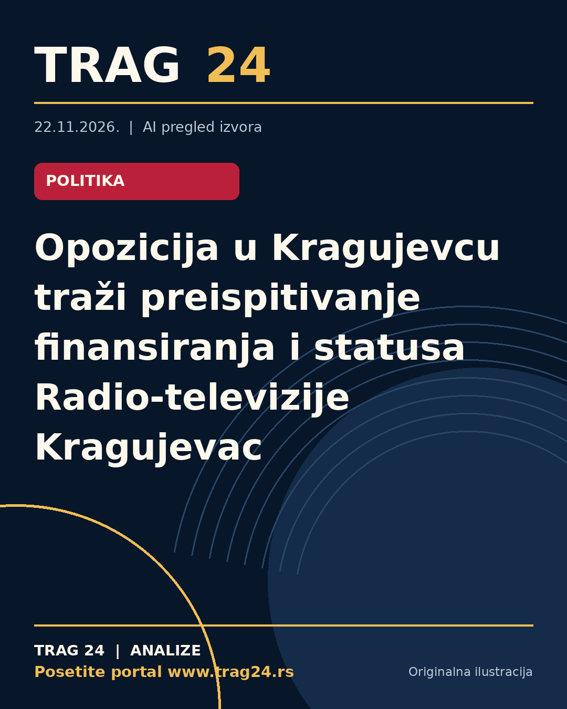

Opozicija u Kragujevcu traži preispitivanje finansiranja i statusa Radio-televizije Kragujevac

ŠTA SE DOGODILO
Na redovnom zasedanju Skupštine Kragujevca, planiranom za 27. novembar, biće razmatrana inicijativa opozicionih odbornika da se preispita model finansiranja, status i način rada Radio-televizije Kragujevac (RTK). Iniicijativu je pokrenulo 33 opoziciona odbornika sa ciljem da se ispita usklađenost finansiranja RTK iz gradskog budžeta sa važećim zakonima i zaštita javnog interesa u oblasti informisanja.
HRONOLOGIJA
RTK je od jula 2017. godine u celosti u vlasništvu Grada Kragujevca, nakon raskida ugovora o privatizaciji. Do tog trenutka kapital RTK je prenet jedinici lokalne samouprave kao izuzetak, sa očekivanjem nove privatizacije. Novi Zakon o javnom informisanju i medijima stupio je na snagu 4. novembra 2023. godine, gde je jasno propisano da lokalne samouprave ne mogu biti osnivači medijskih izdavača, a finansiranje se vrši putem javnih konkursa. Rokovi za okončanje privatizacije RTK su prema opoziciji već istekli. Predstoji razmatranje budžeta za 2027. godinu, što dodatno zahteva jasne smernice za finansiranje RTK.
ŠTA NAVODE IZVORI
Opozicija navodi da je u 2025. godini RTK dobio subvencije u iznosu od 79,25 miliona dinara, uprkos tome što je poslovnu godinu završio sa neto gubitkom od oko 6,1 milion dinara. U poređenju, svi ostali mediji u Kragujevcu su na javnom konkursu dobili ukupno 8,8 miliona dinara. Predloženo je da Gradsko veće formira stručnu radnu grupu za proveru pravne i finansijske strane finansiranja RTK, ali i da zatraži mišljenje nadležnog ministarstva o zakonitosti postojećeg modela. Predlaže se i usklađivanje finansiranja prema zakonskim odredbama, uključujući raspodelu sredstava putem javnih konkursa po jednakim uslovima za sve medije.
ŠTA JE POTVRĐENO
Potvrđeno je da je RTK u vlasništvu Grada Kragujevca od 2017. godine, da postoji novi Zakon o javnom informisanju iz novembra 2023. godine, koji zabranjuje lokalnim samoupravama da budu osnivači medijskih izdavača, i da se sredstva za javno informisanje raspoređuju putem javnih konkursa. Takođe je potvrđeno da je opozicija uputila zahtev za osnivanje radne grupe i podnošenje izveštaja sa predlogom daljih mera do 30 dana od donošenja zaključka.
ŠTA NIJE POTVRĐENO
Nije potvrđeno da li će Skupština Kragujevca usvojiti predlog opozicije i pokrenuti dalje preispitivanje. Nema podataka o stavovima ili eventualnim reakcijama gradskih vlasti ili RTK na ovu inicijativu. Takođe nije poznato da li će i kako ministarstvo nadležno za javno informisanje odgovoriti na eventualni zahtev za mišljenje o zakonitosti finansiranja RTK.
ŠTA OSTАJE OTVORENO: Ostaje otvoreno da li i kako će Skupština Grada Kragujevca konačno odlučiti o ovom zahtevu opozicije, kao i mogući pravni i finansijski efekti eventualnih promena u modelu finansiranja RTK. Takođe je neizvesno na koji način će se okončati privatizacija medijskog izdavača, odnosno da li će biti usklađeni poslovni i pravni odnosi u skladu sa novim zakonskim okvirom.
Izvori
- https://n1info.rs/vesti/opozicija-preispitivanje-nacin-finansiranja-radio-televizije-kragujevac/
- https://nova.rs/vesti/drustvo/opozicija-trazi-preispitivanje-statusa-i-nacin-finansiranja-radio-televizije-kragujevac/
- https://www.danas.rs/vesti/drustvo/opozicija-trazi-preispitivanje-statusa-i-nacin-finansiranja-radio-televizije-kragujevac/
Ova analiza je pripremljena uz pomoć veštačke inteligencije na osnovu javno dostupnih izvora. Navodi izvora nisu nužno nezavisno potvrđeni.